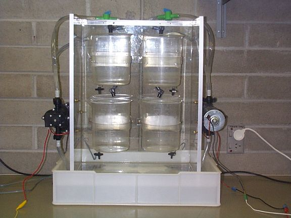

|
You are here : Control System Design - Index | Simulations | Four Coupled Tanks | Apparatus Four Coupled Tanks Case StudyApparatusThe apparatus used to control the system shown on the previous page follows. The system is controlled via a PC which outputs a reference voltage to a Pulse Width Modulator. The Pulse Width Modulator produces a modulated signal to a power amplifier which powers the pumps. This setup provides a very high level of linearity to the system. This was the assumption made by the equations used to represent the system. The levels in the tanks are sensed using Low Pressure Differential Sensors and feed back to the PC via amplifiers which are used to bring the voltage output of the sensors to range between 0-5volts. This signal is feed through LC Low Pass Filters to cut out any noise associated with the signal providing a voltage reference which is easily distinguishable.
The dynamics of each part of the system is represented on the above diagram and is a useful illustrative example of the design considerations which were encountered.  The diagram above shows the Four Tank Laboratory Apparatus. The program used to control the apparatus was the UNAC program. The UNAC program uses building block which are very similar to the block used in MATLAB. This makes the program easy to use for anyone who has not had any experience with the program. A Decentralized PI controller was used in this project to investigate multivariable phenomenon.
Above is a diagram of the Decentralized PI controller used to test the characteristics of the system and also to compare the results found using the physical apparatus. This enabled comparisons to be made and hence conclusion on how well the apparatus was modeled. This system has a multivariable zero associated with it which can be placed in the left or right half plane. Note that this diagram shows the apparatus operating in minimum phase which corresponds to more water going to the bottom two tank than to the top two tanks. To operate the tanks in non-minimum phase more water would be directed to the top two tanks. It was found that control of the apparatus is far more difficult under these conditions to those of the minimum phase. The further the right hand pole is place in the right hand plane the more difficult the apparatus is to control. |